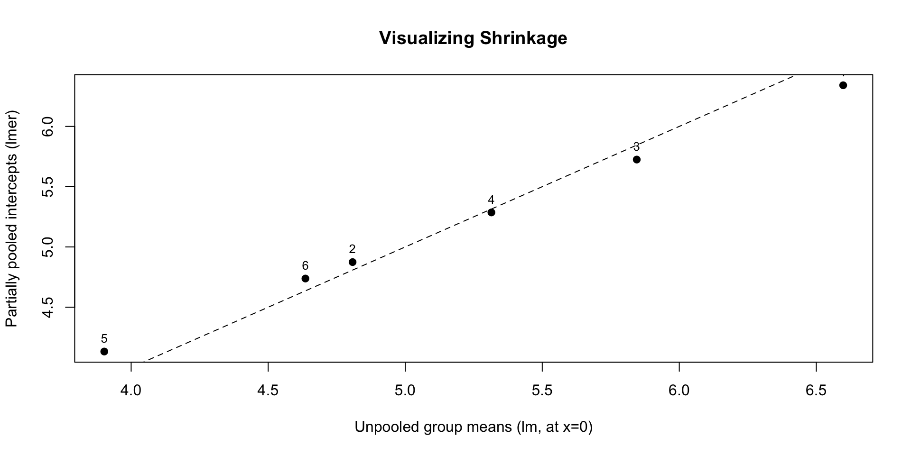

Code
Estimate Std. Error t value
(Intercept) 5.182862 0.3894790 13.30717
x 2.086441 0.1872851 11.14045 Groups Name Std.Dev.
group (Intercept) 0.86291
Residual 0.90584 Modules 1–3: LMMs → GLM(M)s → Marginal Models
Tip
By the end of class, you should be able to:
1. Identify the mean, variance, and correlation structure of any model
2. Explain what parameter each model estimates (subject vs. population)
3. Interpret coefficients on the correct scale
Note
Instructor Prompt: Discuss reasoning, not just correctness.
Surface misconceptions before deep dives.
Important
Motivation
We model hierarchical/correlated data:
\[ y_{ij} = \beta_0 + \beta_1 x_{ij} + \theta_i + \epsilon_{ij}, \quad \theta_i\sim N(0,\tau^2),\ \epsilon_{ij}\sim N(0,\sigma_\epsilon^2),\ \theta_i \perp \epsilon_{ij} \]
Interpretation
| Concept | Meaning |
|---|---|
| Population-level effects | \(\beta_0, \beta_1\): overall (fixed) trend across all groups |
| Random effects | \(\theta_i\): group-level deviations (random across groups) |
| Overall trend | \(\beta_0 + \beta_1 x_{ij}\) |
| Conditional, group-specific trend | \((\beta_0 + \theta_i) + \beta_1 x_{ij}\) |
| Total variability | \(\tau^2 + \sigma_\epsilon^2\) |
| Within-group variability | \(\sigma_\epsilon^2\) |
Key Ideas - Two error sources →
Questions for you?
Intra-class correlation: the proportion of total variability explained by group membership.
Best Linear Unbiased Predictor: Derived through partial pooling.
What is the main concept behind pooling?
\(\hat{\theta}_i = B_i \cdot \bar{y}_i + (1-B_i) \cdot \hat{\mu}\)
The shrinkage factor is the precision weight \(B_i\):
\[ B_i = \frac{n_i}{n_i + \sigma^2/\tau^2} \]
Estimate Std. Error t value
(Intercept) 5.182862 0.3894790 13.30717
x 2.086441 0.1872851 11.14045 Groups Name Std.Dev.
group (Intercept) 0.86291
Residual 0.90584 Tip
Visualize shrinkage:
coef(m1)$group vs. group means from lm(y ~ x + group)

How do we estimate the population-level parameters?
Best Linear Unbiased Estimator of the Coefficient \[ \hat{\beta} = (X^T V^{-1} X)^{-1} X^{T} V^{-1}y,\ V \neq \sigma^2 I \]
Maximum Likelihood Estimate \(\sigma^2\)
\[ \hat{\sigma}^2 =\frac{1}{n} \sum_{i=1}^n (y_i - \bar{y})^2 \]
\[ \hat{\sigma}_{REML}^2 =\frac{1}{n-1} \sum_{i=1}^n (y_i - \bar{y})^2 \]
Important
Motivation
Unified framework:
\[ g(\mu_i) = X_i\beta, \qquad E(Y_i|X_i) = g^{-1}(X_i \beta), \qquad \text{Var}(Y_i|X_i) = V(g^{-1}(X_i \beta)) = \phi V(\mu_i) \]
| Distribution | Link | Variance |
|---|---|---|
| Normal | identity | constant |
| Poisson | log | \(\mu\) |
| Binomial | logit | \(\mu(1-\mu)\) |
Call:
glm(formula = y ~ x, family = poisson(link = "log"), data = df,
offset = log(df$N))
Coefficients:
Estimate Std. Error z value Pr(>|z|)
(Intercept) -3.73504 0.07492 -49.852 <2e-16 ***
x 0.18367 0.07698 2.386 0.017 *
---
Signif. codes: 0 '***' 0.001 '**' 0.01 '*' 0.05 '.' 0.1 ' ' 1
(Dispersion parameter for poisson family taken to be 1)
Null deviance: 115.63 on 99 degrees of freedom
Residual deviance: 110.04 on 98 degrees of freedom
AIC: 330.13
Number of Fisher Scoring iterations: 5
Call:
glm(formula = cbind(y, N - y) ~ x, family = binomial(link = "logit"),
data = df)
Coefficients:
Estimate Std. Error z value Pr(>|z|)
(Intercept) -3.71049 0.07583 -48.933 <2e-16 ***
x 0.18845 0.07805 2.414 0.0158 *
---
Signif. codes: 0 '***' 0.001 '**' 0.01 '*' 0.05 '.' 0.1 ' ' 1
(Dispersion parameter for binomial family taken to be 1)
Null deviance: 118.27 on 99 degrees of freedom
Residual deviance: 112.54 on 98 degrees of freedom
AIC: 330.1
Number of Fisher Scoring iterations: 5Note
Interpret β₁: Both on original and transformed scales
Each one-unit increase in x multiplies \(E[y|x]\) by \(\exp(β_1)\)
\(\beta_1\) is interpreted as the change in _______-__________ per one unit change in x.
Define an odds ratio
Define an incidence rate ratio
How do you get the 95% CIs for the OR?
Context: In GLMs, we assess predictors and compare models using three key tools:
🔹 Wald Test: Tests individual coefficients:
\[
z = \frac{\hat{\beta}_j}{\text{SE}(\hat{\beta}_j)} \quad \Rightarrow \quad p\text{-value from } N(0,1)
\]
Interpretation: is \(\beta_j\) significantly different from 0?
🔹 Likelihood Ratio Test (LRT): Compares nested models:
\[
G^2 = -2(\ell_{\text{reduced}} - \ell_{\text{full}}) \sim \chi^2_{df}
\]
Tests whether removing a term significantly worsens model fit.
🔹 Akaike Information Criterion (AIC): Compares non-nested models (general model selection): \(\text{AIC} = -2\ell + 2p\)
Balances model fit (\(\ell\) = log-likelihood) and parsimony (\(p\) = number of parameters).
Lower AIC ⇒ better tradeoff between complexity and fit.
Summary Table
| Criterion | Purpose | Uses | Test Statistic | Lower/Smaller = Better? |
|---|---|---|---|---|
| Wald Test | Test individual \(\beta_j\) | Non-nested, single term | \(z = \hat\beta / SE\) | – |
| LRT | Compare nested models | Nested | \(G^2 = -2(\ell_0 - \ell_1)\) | ✔ |
| AIC | Compare any models | Nested / non-nested | \(-2\ell + 2p\) | ✔ |
Add random effects to handle within-cluster dependence: \[ g(E[y_{ij}|u_j]) = X_{ij}\beta + \theta_i,\quad \theta_i \sim N(0, \tau^2), \quad \text{NO } \epsilon! \]
Generalized linear mixed model fit by maximum likelihood (Laplace
Approximation) [glmerMod]
Family: binomial ( logit )
Formula: y ~ x + (1 | subject)
AIC BIC logLik -2*log(L) df.resid
225.4 235.3 -109.7 219.4 197
Scaled residuals:
Min 1Q Median 3Q Max
-1.7229 -0.6038 -0.3928 0.7966 2.8816
Random effects:
Groups Name Variance Std.Dev.
subject (Intercept) 0.2983 0.5462
Number of obs: 200, groups: subject, 40
Fixed effects:
Estimate Std. Error z value Pr(>|z|)
(Intercept) -0.8971 0.2032 -4.415 1.01e-05 ***
x 0.9372 0.1865 5.025 5.03e-07 ***
---
Signif. codes: 0 '***' 0.001 '**' 0.01 '*' 0.05 '.' 0.1 ' ' 1
Correlation of Fixed Effects:
(Intr)
x -0.295In a GLM, we model the marginal (population-average) relationship:
\[ E[y_{ij} \mid x_{ij}] = g^{-1}(\beta_0 + \beta_1 x_{ij}) \]
In a GLMM, we model the conditional (group-specific) relationship:
\[ E[y_{ij} \mid x_{ij}, \theta_i] = g^{-1}(\beta_0 + \beta_1 x_{ij} + \theta_i) \]
Tip
Compare \(\hat{\beta}_x\) from:
👉 Subject-specific (GLMM) effects are typically larger in magnitude, because they remove between-subject variation and focus on within-subject change.
Important
Motivation
Progression of correlation handling:
| Method | Handles | Target |
|---|---|---|
| WLS | heteroskedasticity: \(V\) is diagonal | population mean |
| GLS | known correlation \(V\) is any known positive def matrix | population mean |
| GEE | estimated correlation | population mean |
Correlation structure examples:
- \(V_i = \sigma^2 R_i(\alpha)\)
- Independent
- Exchangeable
- AR(1)
- Unstructured\[ \hat{\beta}_{GLS} = (X^T V^{-1}X)^{-1} X^T V^{-1}y \]
\[ cov(\hat{\beta}_{GLS}) = (X^T V^{-1}X)^{-1} \]
If \(V\) is mis-specified, \(\hat{\beta}_{GLS}\) is still consistent,
but its standard errors are wrong.
GEE (Generalized Estimating Equations) fixes this by using a “working correlation” and a robust (sandwich) variance estimator.
\[ \hat{V}_{robust} = (X^T V^{-1} X)^{-1} \left( \sum_i X_i^T V^{-1} \hat{\Omega}_iV^{-1} X_i \right) (X^T V^{-1} X)^{-1} \] where \(\hat{\Omega}_i = \epsilon_i \epsilon_i^\top\) (cluster residual covariance)
The goal of GEE is to estimate population-average effects when observations within a cluster (e.g., repeated measures on a person) are correlated.
We solve for \(\hat{\beta}\) that makes the following weighted residuals sum to zero:
\[ U(\beta) = \sum_{i=1}^m D_i^\top V_i^{-1} (y_i - \mu_i) = 0 \]
| Symbol | Meaning |
|---|---|
| \(i\) | Cluster or subject index (\(i = 1, \dots, m\)) |
| \(y_i\) | Vector of responses for cluster \(i\) |
| \(\mu_i = E(y_i)\) | Mean vector under the model |
| \(D_i = \frac{\partial \mu_i}{\partial \beta}\) | Design (derivative) matrix |
| \(V_i = A_i^{1/2} R_i(\alpha) A_i^{1/2}\) | Working covariance matrix of \(y_i\) |
| \(A_i\) | Diagonal matrix of marginal variances |
| \(R_i(\alpha)\) | Working correlation (independent, exchangeable, AR(1), etc.) |
library(geepack)
id <- factor(rep(1:30, each = 4))
time <- rep(1:4, 30)
x <- rnorm(120)
eta <- 0.5 + 0.4*x
y <- rpois(120, exp(eta))
gee_ind <- geeglm(y ~ x, id=id, family=poisson, corstr="independence")
gee_exc <- geeglm(y ~ x, id=id, family=poisson, corstr="exchangeable")
summary(gee_ind)$coef Estimate Std.err Wald Pr(>|W|)
(Intercept) 0.5144577 0.06985098 54.24433 1.770806e-13
x 0.3524567 0.06691507 27.74366 1.385013e-07 Estimate Std.err Wald Pr(>|W|)
(Intercept) 0.5132801 0.06917003 55.06466 1.166844e-13
x 0.3580889 0.06511357 30.24396 3.809758e-08Note
β estimates are similar, but SEs differ by working correlation.
GEE targets the population-average effect.
Questions on the Midterm